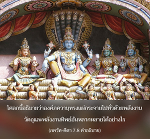
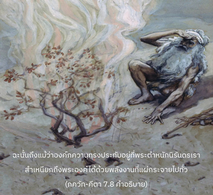

โอ้ โอรสพระนาง กุนฺตี ข้าคือรสของน้ำ คือแสงของดวงอาทิตย์และดวงจันทร์ คือคำว่า โอํ ในบทมนต์พระเวท คือเสียงในอากาศ และคือความสามารถในมนุษย์


โศลกนี้อธิบายว่าองค์ภควานฺทรงแผ่กระจายไปทั่วด้วยพลังงานวัตถุ และพลังงานทิพย์อันหลากหลายได้อย่างไร องค์ภควานฺทรงสามารถสำเหนียกในเบื้องต้นได้ด้วยพลังงานต่างๆ ของพระองค์ ด้วยวิธีนี้จึงได้รับการรู้แจ้งว่าพระองค์ทรงไร้รูปลักษณ์ดังเช่นเทพเจ้าแห่งดวงอาทิตย์ ทรงเป็นบุคคล และสำเหนียกได้ด้วยพลังงานที่แผ่กระจายไปทั่ว คือ แสงอาทิตย์ ฉะนั้น ถึงแม้ว่าองค์ภควานฺทรงประทับอยู่ที่พระตำหนักนิรันดร เราสำเหนียกถึงพระองค์ได้ด้วยพลังงานที่แผ่กระจายไปทั่ว รสของน้ำเป็นสารที่มีฤทธิ์ ในน้ำไม่มีใครชอบดื่มน้ำทะเล เพราะว่ารสของน้ำไปผสมกับเกลือ เสน่ห์ของน้ำขึ้นอยู่กับความบริสุทธิ์ของรส รสที่บริสุทธิ์นี้ คือ หนึ่งในพลังงานของพระองค์ มายาวาที สำเหนียกได้ว่าองค์ภควานฺว่าทรงปรากฏอยู่ในน้ำด้วยรส และสาวกสรรเสริญพระองค์ที่ทรงพระเมตตาส่งน้ำที่มีรสชาติเพื่อขจัดความกระหายของมนุษย์ นี่คือวิธีการสำเหนียกองค์ภควานฺในเชิงปฏิบัติ จะไม่มีข้อขัดแย้งระหว่างลัทธิที่เชื่อว่ามีบุคคล และที่เชื่อว่าไม่มีบุคคล ผู้ที่รู้จักพระองค์ทราบดีว่าแนวคิดไม่มีบุคคล และแนวคิดว่ามีบุคคลปรากฏอยู่ควบคู่กันไปในทุกสิ่งทุกอย่างจึงไม่มีข้อขัดแย้ง ดังนั้น องค์ ไจตนฺย ทรงสถาปนาหลักธรรม อจินฺตฺย เภท และ อเภท-ตตฺตฺว อันประเสริฐว่าเป็นทั้งหนึ่งเดียว และแตกต่างควบคู่กันไป
แสงของดวงอาทิตย์และดวงจันทร์เดิมทีสาดส่องออกมาจาก พฺรหฺม-โชฺยติรฺ ซึ่งเป็นรัศมีอันไร้รูปลักษณ์ขององค์ภควานฺเช่นเดียวกัน ปฺรณว หรือเสียงทิพย์แห่ง โอํ การ ที่เริ่มต้นมนต์พระเวททุกบทเป็นคำถวายพระพรชัยมงคลแด่องค์ภควานฺ เนื่องจากพวกไม่เชื่อในรูปลักษณ์กลัวการถวายพระพรชัยมงคลแด่องค์ภควานฺ ด้วยพระนามอันมากมายขององค์กฺฤษฺณจึงชอบคลื่นเสียงทิพย์ โอํ-การ มากกว่า แต่พวกเขาไม่รู้แจ้งว่า โอํ-การ เป็นเสียงแทนองค์กฺฤษฺณ อาณาเขตของกฺฤษฺณจิตสำนึกแผ่กระจายไปทุกหนทุกแห่งผู้รู้กฺฤษฺณจิตสำนึกเป็นผู้ได้รับพร พวกที่ไม่รู้จักองค์กฺฤษฺณจะอยู่ในความหลง ดังนั้น ความรู้แห่งกฺฤษฺณ คือ ความหลุดพ้น และความไม่รู้พระองค์ คือ พันธนาการ